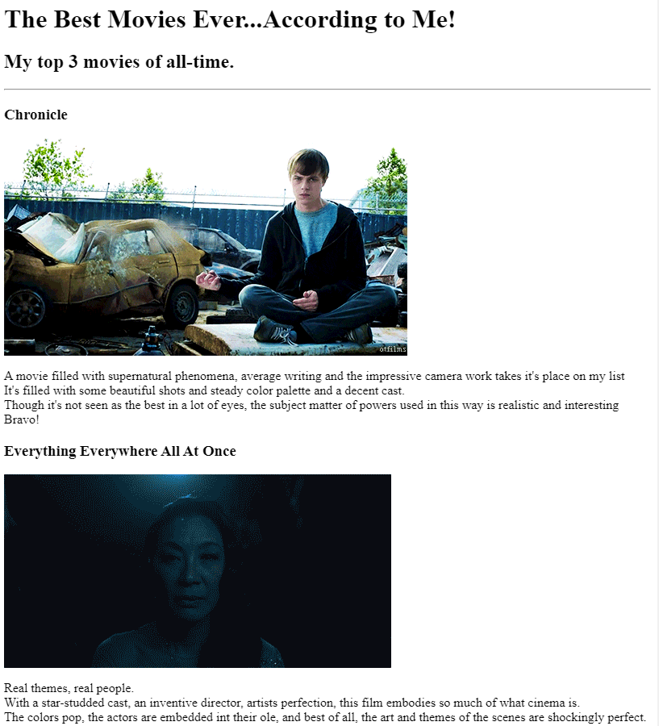
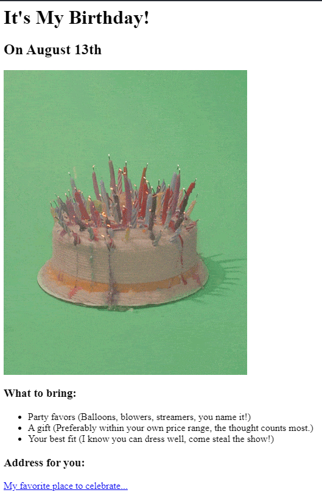

Gavin Griggs' Portfolio
"Just get up and chase it. It'll be yours."
Aspiring web developer with much to show and even more to learn.
Projects

HTML Boilerplate and basics (images, links, headings, etc.)

HTML Boilerplate and basics (images, links, lists, etc.)
About Me Contact Info